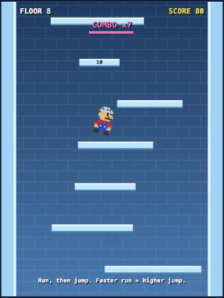

A 60-second icy tower-climbing game for students killing time between classes: no install, no ads, no account. Just open the link and climb.
Current Status: Build 3 (in progress): villains, power-ups, moving and slanted platforms, sound and phone controls added to the Build 2 game, which has a real AI call (Claude Haiku writes a one-line coach tip when you lose; runs locally with node server.js) + PostHog analytics on this page and in the game
Demo: Play the game → (laptop: arrows/WASD to move, Space to jump; phone: tap to start, tilt or touch to steer, sound on). The AI coach line only appears when run locally; this hosted page is static and has no server.

Who is this for? My Building with AI podmates and roommates: NYU students with a laptop open and 5–10 dead minutes between classes or while waiting for a build to finish. I see them every week, so I can watch them play and ask what they think.
The painful "Before" workflow: They reach for a phone game and hit an app-store install, a login, a tutorial, then ads or energy timers before a single minute of fun. Or they doom-scroll, which isn't actually fun. Browser games mostly have the same ads and pop-ups.
The "After" workflow with this product: Click one link, pick a parody character, and play. A run takes 30–90 seconds, your best score is saved, and one key restarts. Nothing to install, nothing to sign up for.
Riskiest Assumption: That a 60-second game this simple makes someone press retry. If a first-time player plays one run and leaves, nothing else matters. A smaller technical risk is that the AI call is slow or fails and makes the game feel broken.
How Build 2 tests it: PostHog records run_started and run_ended for every run, so I can count runs per player and per session and watch session replays of first-time players. The coach call is fire-and-forget: if it is slow or fails the game keeps working, and coach_received / coach_failed events measure how often that happens. After the fix below, 12 of 12 test calls succeeded in about 1–2 seconds.
Simple Architecture: [Player loses a run in the browser] → [game.html sends character, floor, score to POST /api/coach] → [server.js (local Node, holds ANTHROPIC_API_KEY from .env) calls the Claude API, model claude-haiku-5-5] → [one-sentence taunt + tip returns and is drawn on the game-over screen]. In parallel, the PostHog snippet in the browser sends pageviews, clicks, game events and session replay to PostHog. The API key never reaches the browser; only PostHog's public project key does.
What would break: no .env key → the server returns 503 and the game just shows no tip. No server (this GitHub Pages site) → the request 404s and the game shows no tip. A slow reply is ignored if the player already restarted.
.env and never reaches the browser. (2) PostHog on this page (pageview, clicked_try_product on the product button) and in the game (run_started, run_ended, coach_requested, coach_received, coach_failed, plus session replay). The character screen tells testers that anonymous play stats and replay are recorded, and the game has no text inputs, so nothing sensitive is captured. (3) PRD v2 above, and AGENTS.md now has the structure plus setup and run steps (cp .env.example .env, node server.js).coach_failed and the server log said "status 200"). I first blamed the reply format and changed the parsing, which did not fix it. Probing 12 calls showed the real cause: Haiku 5.5 "thinks" by default, and in 3 of 12 calls the thinking used up the whole 150-token limit, leaving no answer text. A one-sentence tip doesn't need reasoning, so I turned thinking off: 12 of 12 calls then returned text. PRD change: "no backend" became "a tiny local server that only holds the key and makes the AI call." The riskiest assumption is now whether players press retry, tested with PostHog run counts and replays.